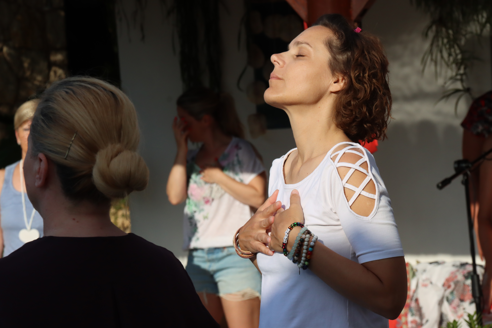

HeartMath Institute
Retreat · 6.–9. junij 2026 · Logarska dolina
Koherenca srca
Šest tehnik za koherenco, ki jo vzdržujete tudi pod pritiskom.
O retreatu
Trideset let raziskav v štiri dni prakse.
HeartMath Coherence Advantage je licenčni program, ki temelji na 30 letih znanstvenih raziskav HeartMath Inštituta o usklajenosti srca in možganov.
Program prenaša šest tehnik srčne koherence, ki jih lahko takoj uporabite v vsakodnevnem življenju in pri delu. Ob zaključku prejmete uradni certifikat HeartMath Inštituta.
Retreat je posebej primeren za vodje, HR strokovnjake in posameznike v zahtevnih poklicnih okoljih, ki iščejo praktična orodja za upravljanje stresa in izboljšanje odločanja.
Kaj je vključeno
- 4 dni licenčnega programa HeartMath Coherence Advantage
- Šest tehnik srčne koherence (Quick Coherence, Freeze Frame, Cut-Thru, Heart Lock-In in drugi)
- Uradni certifikat HeartMath Inštituta
- Gradiva in priročnik za vsakodnevno prakso
- HRV biofeedback demonstracija
- Nastanitev v Hotelu Plesnik (3 noči)
- Vse obroke med programom
- Online podpora po retreatu
Oris programa
Razumevanje biologije srčne koherence. Prve tri tehnike. Merjenje HRV in zavedanje osebnega izhodišča.
Napredne tehnike. Integracija v delovne scenarije. Skupinski procesi in individualna praksa.
Zaključni pregled tehnik. Postavljanje navad za vsakodnevno prakso. Podelitev certifikatov HeartMath Inštituta.
Lokacija: Hotel Plesnik, Logarska dolina

Hotel Plesnik v Logarski dolini ponuja butično nastanitev v enem najlepših alpskih kotičkov Slovenije. Naravno okolje vzpodbuja umiritev in koncentracijo.
Pogosta vprašanja
Ne. Program je zasnovan za vse ravni izkušenosti. Tehnike so praktične in aplikativne od prvega dne.
Da. Certifikat HeartMath Inštituta je mednarodno priznan in izdan s strani HeartMath LLC iz Boldinasa Creek, Kalifornija.
Da, HeartMath Coherence Advantage je eden najpogosteje naročenih korporativnih programov. Možna je izvedba za zaključene ekipe — kontaktirajte nas za ponudbo.
Koherenca Srca
6.–9. junij 2026 · Logarska dolina
+ DDV · nastanitev vključena
Omejeno na 20 udeležencev
Voditeljica
Certificirana HeartMath trenerka.
Tanja je certificirana HeartMath trenerka z večletno izkušnjo integracije tehnik v individualno in skupinsko delo. Program izvaja v slovenščini z mednarodnimi certifikati.
Spoznajte Tanjo →